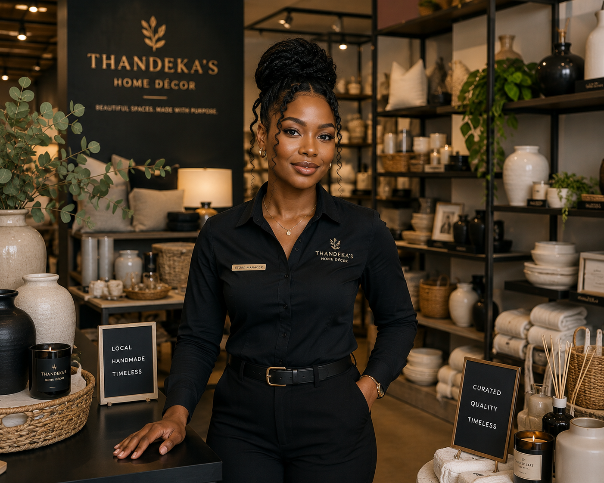

Our Story
Thandeka's Artisan Home Decor started as a small stall selling handmade ceramics and woven goods from local artisans. Today, it has grown into a beloved store offering a curated range of home decor, while continuing to support the makers behind every piece.
Mission & Vision
Our Mission
To bring beautifully crafted, locally-made home decor into every household at accessible prices, while supporting local artisans.
Our Vision
To become the go-to destination for locally made, high-quality home decor in the region.
Meet the Team

Founder & Curator
Sources and curates the store's artisan product range.

Store Manager
Manages daily store operations and customer relationships.